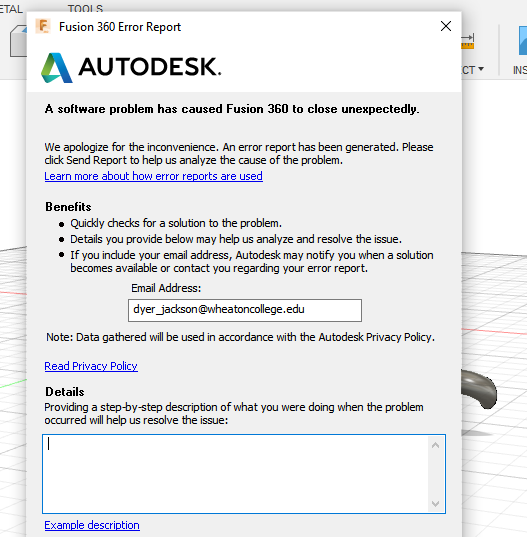
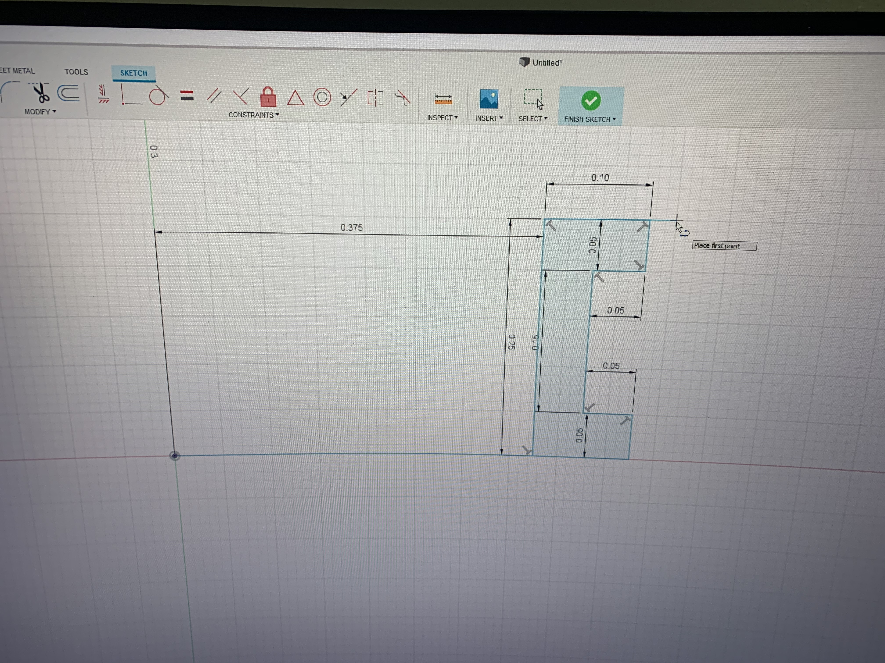

To my understanding SLA printing is like FLA 3D printing but fancier and higher quality. Intead of PLA fillament it uses resin, which leads to a smoother finish. SLA stands for Stereolithography, and it's the process of using directed laser to selectivly harden resign into a shape. SLA printing is used mainly to make models, and forms.
My ring design started off with the braided ring becuase it was definitly the coolest looking ring I could find. Though it was a hard process I thought I would be able to do it, and knew that the final result was going to make it worth it for me. The basic process for this was to create a rectangle, curve the rectangle into a ring, and then make a design that would loop around the rectange ring. On paper this all sounds very easy but the video tutorial I was using was super hard to follow, as they moved really quickly and there was no explanation. The worst part of it was that there was some terrible calming music in the background that drove me insane everytime I had to repeat a section over and over. Some of the new tools I used were the Pipe Tool to turn a line into a 3D pipe, the Rotate tool, that let me design the shape of the braid, and the Center Point Arc tool that helped me turn my rectangle into something ring shaped. Everything was going pretty smoothly, until disastor stuck as it usually does for me in these projects. My Fushion360 crashed and I lost all my work, and my will to continue
After weeks of mental recovery I finally returned to my project. This time I came in 2 weeks more mature, a new design video, and a friend, Nick Hughes. Nick had already made the Spinner Ring and promised me that this was a much easier route to take, and that there was no crazy looping that would make my Fushion360 (and me) fail. Just incase though, he let me borrow his laptop which was much better then mine becuase we knew his could handle the design. I went into the new video and immediatly called Nick to tell him he was a liar. The video started at mach 10 of someone making a crazy series of rectangles and lines and I couldnt keep up. Nick ended up having to come over and slow the video down with me to get the outline done. After that I used the Axis Tool to extrude around the Center Axis which made my ring look like a ring. I then used the Bevel Tool to smooth out the edges and (as the person in the video says) Voila! I texted Nick and appologized for calling him a Liar becuase this really was wayy more simple then the other ring.
 DESIGN FILES HERE